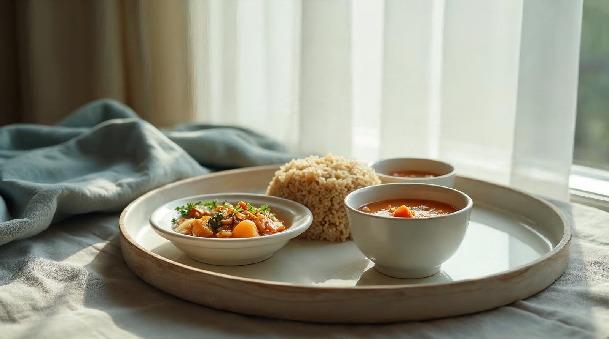
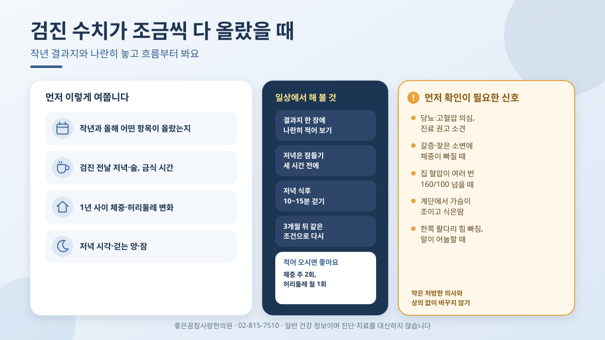

이종호 한의사 감수좋은꿈참사랑한의원 대표원장 (한의사 면허번호 19769)발행 2026-11-28 · 수정 2026-11-28
이 글의 차례
연말 건강검진 결과지를 받아 보니 공복혈당은 '경계', 중성지방은 '주의', 허리둘레는 기준선 근처, 혈압은 '정상 높음'처럼 어느 하나 크게 나쁘다고 하기는 어렵지만, 작년 결과지와 비교하면 모두 조금씩 올라 있어 마음이 쓰이는 분이 많습니다.
이런 결과는 하나하나를 따로 보기보다, 몸이 지난 1년 동안 한 방향으로 움직였다는 흐름으로 읽는 것이 좋습니다. 이 수치들은 서로 이어져 있어서, 대개 공통된 생활의 변화가 함께 숨어 있기 때문입니다. 먼저 작년과 올해 결과지를 나란히 놓고 어떤 항목이 얼마나 올랐는지 정리하고, 병원에서 재검이나 약물 상담을 권고받았다면 그 일정을 먼저 지킵니다.
그다음 저녁 식사 시각, 식후 움직임, 잠처럼 여러 수치에 함께 닿는 생활 습관을 한두 가지씩 바꾸고, 3개월쯤 뒤 같은 조건에서 다시 확인해 흐름이 바뀌는지 봅니다. 다만 공복혈당이나 혈압이 진단 기준을 넘었다는 설명을 들었거나, 갈증과 잦은 소변, 이유 없는 체중 감소가 함께 있다면 생활 정리보다 진료가 먼저입니다.
왜 여러 수치가 함께 조금씩 오를까요
- 공복혈당, 중성지방, 허리둘레, 혈압, 좋은 콜레스테롤(HDL)은 따로 움직이는 숫자가 아닙니다. 배 안쪽에 지방이 늘면 인슐린이 잘 듣지 않게 되고, 그만큼 혈당이 오르기 쉬우며, 간에서는 중성지방을 더 만들고, 혈압도 함께 오르기 쉽습니다.
- 흔히 쓰는 대사증후군 기준은 허리둘레(남성 90cm, 여성 85cm 이상), 중성지방 150mg/dL 이상, HDL(남성 40mg/dL, 여성 50mg/dL 미만), 혈압 130/85mmHg 이상, 공복혈당 100mg/dL 이상 가운데 세 가지 이상이 겹치는 경우입니다. 하나하나는 경계 수준이어도 여러 개가 함께 걸치면 그 자체로 살펴볼 이유가 됩니다.
- 1년 사이 재택근무로 바뀌었거나, 업무가 늘어 야근이 잦아졌거나, 하던 운동을 그만두었다면 체중은 2~3kg만 늘어도 그 대부분이 배 쪽에 붙기 쉽습니다.
- 나이가 들면 근육량이 조금씩 줄어 같은 양을 먹어도 남는 에너지가 늘어납니다. 체중이 그대로인데 허리둘레만 늘었다면 근육은 줄고 지방이 늘었을 가능성도 있습니다.
- 잠이 부족하거나 늦게 자는 날이 많으면 다음 날 단 음식과 야식이 당기기 쉽고, 혈당 조절에도 부담이 될 수 있습니다.
- 술은 중성지방과 간 수치에 직접 영향을 주고, 함께 먹는 기름진 안주와 마무리 식사가 열량을 크게 늘립니다.
- 연말 검진은 송년회 시기와 겹쳐 검진 전날 늦게까지 먹고 마셨거나 금식 시간을 다 지키지 못한 경우가 있습니다. 이럴 때는 중성지방과 혈당이 평소보다 높게 나올 수 있어, 한 번의 결과보다 흐름을 보는 것이 중요합니다.
- 한의학에서는 기름지고 단 음식을 자주 먹고 덜 움직이는 생활이 이어질 때 몸 안에 습담이 쌓이는 모습으로 살피기도 합니다. 몸이 무겁고 식후에 유난히 졸리며 쉽게 붓는지도 함께 봅니다.
먼저 이렇게 여쭙니다
- 작년이나 재작년 결과지가 있는지, 어떤 항목이 얼마나 달라졌는지 여쭙니다.
- 검진 전날 저녁 식사 시각과 메뉴, 술을 드셨는지, 몇 시간 금식하셨는지 여쭙니다.
- 지난 1년 사이 체중과 바지 허리 치수가 어떻게 바뀌었는지 여쭙니다.
- 아침, 점심, 저녁 식사 시각과 야식, 단 음료, 술자리 횟수를 여쭙니다.
- 하루에 걷는 시간과 앉아 있는 시간, 하던 운동을 그만둔 시기를 여쭙니다.
- 잠드는 시각과 일어나는 시각, 코골이나 자다가 숨이 멈춘다는 말을 들은 적이 있는지 여쭙니다.
- 부모나 형제 가운데 당뇨, 고혈압, 이상지질혈증이 있는 분이 있는지 여쭙니다.
- 복용 중인 약과, 검진 기관이나 병원에서 들은 설명을 여쭙니다.

일상에서 먼저 해 볼 수 있는 것
첫 주: 결과지를 나란히 놓고 정리하기
- 작년과 올해 결과지를 펴고 공복혈당, 당화혈색소(있다면), 중성지방, HDL, LDL, 혈압, 허리둘레, 체중, 간 수치를 한 장에 나란히 적습니다.
- 오른 항목에는 화살표를, 기준선을 넘은 항목에는 동그라미를 칩니다. 이렇게 보면 무엇이 함께 움직였는지 한눈에 보입니다.
- 결과 설명에 '추적 검사', '재검', '진료 권고', '약물 상담' 같은 말이 있는지 확인합니다. 있다면 그 일정부터 달력에 적습니다.
- 허리둘레와 중성지방, 혈당이 함께 올랐다면 배 쪽 지방이 늘어난 것이 공통된 출발점일 수 있습니다. 이 경우 여러 수치를 따로 붙잡기보다 저녁 식사와 활동량처럼 한 번에 여러 곳에 닿는 습관부터 바꾸는 편이 효율적입니다.
둘째 주부터: 저녁 식사 바꾸기
- 저녁은 잠들기 세 시간 전에 마칩니다. 야식을 일주일에 몇 번 먹는지 세어 보고, 먼저 그 횟수를 절반으로 줄입니다.
- 밥은 평소의 3분의 2 정도로 담고, 채소와 단백질 반찬을 먼저 먹은 뒤 밥을 나중에 먹습니다. 같은 양이라도 먹는 순서를 바꾸면 식후 혈당이 덜 가파르게 오를 수 있습니다.
- 단 음료, 과일 주스, 믹스커피를 하루에 몇 잔 마시는지 적어 보고, 한 잔씩 물이나 보리차로 바꿉니다.
- 송년회는 일주일에 한두 번까지로 정하고, 안주는 구이, 두부, 채소 위주로 고르며, 마무리 라면이나 볶음밥은 건너뜁니다. 술 마신 다음 날 아침은 거르지 말고 가볍게 먹습니다.
둘째 주부터: 식후 움직임 더하기
- 저녁 식사 뒤 10~15분 걷습니다. 추운 날에는 아파트 계단을 천천히 오르내리거나, 거실에서 제자리걸음을 하며 TV를 봐도 됩니다.
- 앉아서 일할 때는 50분마다 일어나 2~3분 걷거나 물을 뜨러 갑니다.
- 일주일에 두 번은 의자에서 앉았다 일어서기 열 번을 두 세트, 벽을 짚고 팔굽혀펴기 열 번을 해 근육을 지킵니다.
잠의 시각 고정하기
- 잠드는 시각과 일어나는 시각을 주말에도 크게 바꾸지 않고, 7시간 안팎을 목표로 합니다.
- 자기 전 휴대폰을 보는 시간을 줄이고, 잠들기 한 시간 전부터 조명을 낮춥니다.
4주부터 12주까지: 재고 기록하기
- 체중은 일주일에 두 번, 아침에 화장실을 다녀온 뒤 같은 조건으로 잽니다.
- 허리둘레는 한 달에 한 번, 배꼽 높이에서 숨을 편하게 내쉰 뒤 줄자로 잽니다.
- 집에 혈압계가 있다면 일주일에 사흘, 아침과 저녁에 앉아서 5분 쉰 뒤 잽니다.
- 3개월쯤 뒤 같은 조건으로 다시 확인합니다. 병원에서 따로 정해 준 재검 일정이 있다면 그것을 먼저 따릅니다. 당화혈색소는 지난 2~3개월의 평균 혈당을 반영해, 3개월 간격으로 비교하기 좋습니다.
상황별 예시
- 예를 들어 1년 사이 재택근무로 바뀐 40대 직장인이 공복혈당은 경계로 올라서고, 중성지방이 주의 판정을 받고, 허리둘레도 3cm 늘어난 경우, 저녁을 밤 9시 넘어 먹고 하루 걸음이 크게 줄어든 것이 공통된 출발점일 수 있습니다. 저녁 시각을 한 시간 당기고 식후 15분 걷기부터 시작해 봅니다.
- 예를 들어 체중은 작년과 거의 같은데 허리둘레와 혈압, 공복혈당이 조금씩 오른 50대인 경우, 근육은 줄고 배 지방이 늘었을 수 있습니다. 인바디로 골격근량과 체지방률을 함께 확인하고, 걷기에 더해 앉았다 일어서기 같은 근력 운동을 넣어 봅니다.
- 예를 들어 검진 전날 송년회에서 늦게까지 술과 안주를 먹은 30대인 경우, 중성지방이 작년보다 크게 높게 나올 수 있습니다. 재검을 권고받았다면 그 일정에 맞춰 전날 술을 피하고 금식 시간을 지켜 다시 확인한 뒤, 그 결과를 기준으로 흐름을 봅니다.
- 예를 들어 교대 근무로 밤에 일하며 새벽에 야식을 먹는 날이 많은 경우, 혈당과 중성지방이 함께 오를 수 있습니다. 근무 일정에 맞춰 식사 시각을 하루 세 번으로 고정하고, 퇴근 뒤 잠들기 전에는 가볍게 먹는 쪽으로 바꿔 봅니다.
자주 하는 오해
- 하나하나가 기준선 근처이니 괜찮다고 넘기기 쉽지만, 여러 수치가 함께 오르는 흐름은 하나가 크게 오른 것만큼 살펴볼 이유가 됩니다.
- 체중만 빼면 다 해결된다고 여기는 분도 있습니다. 체중이 그대로여도 허리둘레와 근육량이 달라질 수 있어, 체중과 허리둘레, 근육량을 함께 보는 편이 좋습니다.
- 끼니를 굶으면 빨리 내려간다고 생각하기 쉽지만, 굶은 뒤 폭식하거나 근육이 줄어 오히려 흐름이 나빠질 수 있습니다.
- 한 번의 검진 결과가 내 몸의 전부라고 여기기 쉽습니다. 검진 전날의 식사와 술, 잠에 따라 결과가 흔들릴 수 있어 같은 조건으로 다시 재어 흐름을 보는 것이 좋습니다.
- 특정 음식이나 건강식품 하나로 수치를 바로잡으려는 분도 있습니다. 여러 수치가 함께 오른 경우일수록 식사, 움직임, 잠처럼 생활 전체를 함께 바꾸는 편이 무리가 적습니다.
스스로 점검해 보세요
- 작년과 비교해 세 가지 이상 항목이 함께 올랐다.
- 1년 사이 바지 허리가 한 치수 이상 커졌다.
- 저녁을 밤 9시 넘어 먹거나 야식을 먹는 날이 일주일에 세 번 이상이다.
- 하루 걷는 시간이 30분이 안 되는 날이 많다.
- 술자리가 일주일에 두 번 이상이고, 마무리 식사까지 먹는 편이다.
- 잠이 6시간보다 짧은 날이 많거나, 코를 곤다는 말을 듣는다.
- 식사 뒤 유난히 졸리고, 몸이 무겁고 잘 붓는다.
한의원에서 함께 살필 수 있는 경우
- 검진 수치가 경계 수준으로 여러 개 걸쳐 있어 생활을 어디서부터 정리할지 함께 정하고 싶은 경우
- 식후 졸림, 몸이 무겁고 붓는 느낌, 잠이 얕은 느낌이 함께 있는 경우
- 체중보다 허리둘레와 근육량 변화가 궁금한 경우
- 병원에서 생활 습관 조절부터 해 보자는 설명을 들었고, 그 과정을 꾸준히 기록하며 이어 가고 싶은 경우
좋은꿈참사랑한의원에서는 첫 방문 때 작년과 올해 결과지를 함께 보며 어떤 항목이 얼마나 움직였는지 먼저 정리하고, 문진으로 식사 시각과 술, 활동량, 잠, 가족력과 복용 중인 약을 여쭌 뒤 맥부터 짚어 봅니다. 진맥과 함께 혀와 배를 살펴 몸이 무겁고 붓는 정도, 소화와 대변 상태를 확인합니다.
필요하면 인바디 770으로 체지방과 골격근량을 보고, 당화혈색소 검사기나 혈액 검사기로 지금 상태를 확인하기도 합니다. 검사로 확인할 수 있는 항목과 공복이 필요한지는 방문 전 전화로 확인해 주세요. 그 뒤 저녁 식사, 식후 걷기, 잠 가운데 무엇부터 바꿀지 함께 정하고, 병원 진료가 먼저 필요하다고 판단되면 그렇게 안내해 드립니다.
다음 진료에서는 지난번 정한 습관을 해 보신 기록을 이어서 보고, 몇 주 간격으로 같은 조건에서 다시 재어 흐름을 비교합니다.
얼마나 지켜보고 언제 상담할까요
- 생활 습관을 한두 가지씩 바꾸며 4주 동안 체중과 허리둘레, 식사와 걸음을 기록해 봅니다.
- 3개월쯤 뒤 같은 조건으로 다시 확인해 흐름이 어떻게 바뀌었는지 봅니다. 병원에서 정해 준 재검 일정이 있다면 그것이 먼저입니다.
- 혼자 해 보는데 어디서부터 바꿔야 할지 막막하거나, 기록이 자꾸 끊긴다면 상담을 받아 순서를 함께 정해 보셔도 좋습니다.
- 다시 잰 수치가 오히려 더 올랐거나, 아래와 같은 신호가 함께 있다면 지켜보지 말고 진료를 받습니다.
이렇게 기록해 오시면 상담이 쉬워집니다
- 작년과 올해 건강검진 결과지(가능하면 재작년 것까지)
- 검진 전날 저녁 식사와 술, 금식한 시간
- 일주일 동안의 식사 시각과 야식, 단 음료, 술자리 횟수
- 하루 걸음 수나 걷는 시간, 하는 운동
- 체중과 허리둘레, 집에서 잰 혈압 기록
- 잠드는 시각과 일어나는 시각, 코골이 여부, 복용 중인 약과 영양제
이런 증상은 먼저 확인이 필요합니다
- 검진 결과에 당뇨나 고혈압이 의심된다는 소견, 또는 진료나 약물 상담을 권고받은 경우
- 갈증이 심하고 소변을 자주 보며, 먹는 양은 그대로인데 체중이 빠지는 경우
이런 신호가 있으면 한의원보다 가까운 병원이나 응급실을 먼저 찾으세요.
관련 글
- 공복혈당이 경계 수준이라고 들었을 때 생활에서 무엇을 살펴보나요?
- 검진 결과를 들은 뒤 3개월 동안 생활 기록은 어떻게 하면 부담 없이 이어갈 수 있나요?
- 당화혈색소는 얼마 간격으로 다시 재고, 그사이 무엇을 기록하면 좋을까요?

여쭙는 것
- 작년이나 재작년 결과지가 있는지, 어떤 항목이 얼마나 달라졌는지 여쭙니다.
- 검진 전날 저녁 식사 시각과 메뉴, 술을 드셨는지, 몇 시간 금식하셨는지 여쭙니다.
- 지난 1년 사이 체중과 바지 허리 치수가 어떻게 바뀌었는지 여쭙니다.
생활에서 해 볼 것
- 작년과 올해 결과지를 펴고 공복혈당, 당화혈색소(있다면), 중성지방, HDL, LD…
- 오른 항목에는 화살표를, 기준선을 넘은 항목에는 동그라미를 칩니다. 이렇게 보면 무…
- 결과 설명에 '추적 검사', '재검', '진료 권고', '약물 상담' 같은 말이 있…
한의원에서 함께 살필 것
- 검진 수치가 경계 수준으로 여러 개 걸쳐 있어 생활을 어디서부터 정리할지 함께 정하…
- 식후 졸림, 몸이 무겁고 붓는 느낌, 잠이 얕은 느낌이 함께 있는 경우
- 체중보다 허리둘레와 근육량 변화가 궁금한 경우
먼저 확인이 필요한 신호
- 검진 결과에 당뇨나 고혈압이 의심된다는 소견, 또는 진료나 약물 상담을 권고받은 경우
- 갈증이 심하고 소변을 자주 보며, 먹는 양은 그대로인데 체중이 빠지는 경우
한눈에 보는 표
| 구분 | 핵심 |
|---|---|
| 여쭙는 것 | 작년이나 재작년 결과지가 있는지, 어떤 항목이 얼마나 달라졌는지 여쭙니다. 검진 전날 저녁 식사 시각과 메뉴, 술을 드셨는지, 몇 시간 금식하셨는지 여쭙니다. |
| 생활에서 해 볼 것 | 작년과 올해 결과지를 펴고 공복혈당, 당화혈색소(있다면), 중성지방, HDL, LDL, 혈압, 허리둘레, 체중, 간 수치를 한 장에 나란히 적습니다. 오른 항목에는 화살표를, 기준선을 넘은 항목에는 동그라미를 칩니다. 이렇게 보면 무엇이 함께 움직였는지 한눈에 보입니다. |
| 한의원에서 함께 살필 것 | 검진 수치가 경계 수준으로 여러 개 걸쳐 있어 생활을 어디서부터 정리할지 함께 정하고 싶은 경우 식후 졸림, 몸이 무겁고 붓는 느낌, 잠이 얕은 느낌이 함께 있는 경우 |
| 먼저 확인이 필요한 신호 | 검진 결과에 당뇨나 고혈압이 의심된다는 소견, 또는 진료나 약물 상담을 권고받은 경우 갈증이 심하고 소변을 자주 보며, 먹는 양은 그대로인데 체중이 빠지는 경우 |
자주 묻는 질문
여러 수치가 조금씩 오른 것과 하나가 크게 오른 것 중 어느 쪽이 더 걱정인가요?
어느 한쪽이 늘 더 걱정이라고 말하기는 어렵습니다. 하나가 크게 올랐다면 그 항목에 대한 진료가 먼저일 수 있고, 여러 개가 함께 올랐다면 공통된 생활 변화를 찾아 함께 정리하는 것이 중요합니다. 검진 기관이나 병원의 권고를 먼저 확인해 주세요.
다시 검사는 언제 받는 것이 좋을까요?
병원에서 정해 준 재검 일정이 있다면 그것을 따릅니다. 따로 정해진 일정이 없다면 생활을 바꾼 뒤 3개월쯤 지나 같은 조건으로 확인하면 흐름을 보기 좋습니다.
검진 전날 술을 마셨는데 결과를 믿어도 되나요?
술과 늦은 식사는 중성지방과 혈당 결과에 영향을 줄 수 있습니다. 전날 일을 기록해 두고, 재검이나 다음 검사 때는 전날 술을 피하고 금식 시간을 지켜 다시 확인한 결과로 흐름을 보는 편이 좋습니다.
체중은 그대로인데 허리둘레만 늘어난 건 왜 그런가요?
근육은 줄고 배 쪽 지방이 늘면 체중은 비슷해도 허리둘레가 늘 수 있습니다. 인바디로 골격근량과 체지방을 함께 보면 변화를 이해하는 데 도움이 됩니다.
한의원에서는 검진 결과를 어떻게 함께 보나요?
작년과 올해 결과지를 나란히 놓고 함께 움직인 항목을 정리한 뒤, 식사와 활동, 잠을 여쭙고 맥부터 짚어 봅니다. 필요하면 인바디 770이나 당화혈색소 검사기, 혈액 검사기로 지금 상태를 확인하고 생활에서 바꿀 순서를 함께 정합니다.
좋은꿈참사랑한의원은 재진 때 지난번 이야기부터 이어서 여쭙니다. 진료시간과 예약은 오시는 길에서 확인하세요.
어디서 상담받을 수 있나요?
좋은꿈참사랑한의원은 서울 동작구 만양로2길 2 신성빌딩 3층·5층(서울 동작구 상도동, 7호선 상도역 3번 출구 근처)에 있습니다. 한의사 3명(이종호 대표원장, 조영기 수석진료원장, 정원영 진료원장)이 진료합니다. 진료시간은 평일 09:30~20:00(점심 13:00~14:00), 토·일·공휴일 09:30~15:00이며, 방문 전 전화로 확인을 권합니다. 예약은 네이버 예약, 카카오톡 상담, 전화 02-815-7510로 받습니다.
이 글은 일반적인 건강 정보이며 개인의 진단이나 치료를 대신하지 않습니다. 증상이 있거나 복용 중인 약이 있다면 진료를 통해 확인하세요. 치료 효과는 개인마다 다를 수 있습니다.
작성 기준: 일반적으로 알려져 있는 건강 정보를 참고해 정리했습니다(대표원장 감수). 증상 기록은 1~2주 동안 하루 1회, 비슷한 시간에 적어 오시면 지난 상태와 비교하기 쉽습니다.